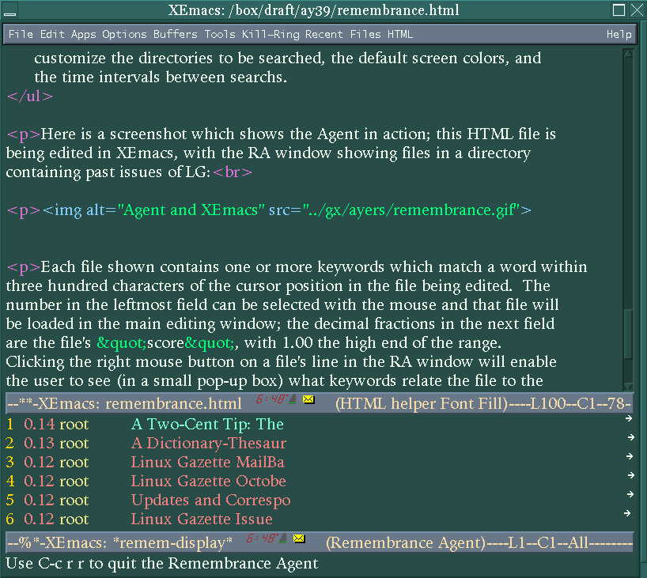

![[ TABLE OF CONTENTS ]](../gx/indexnew.gif)
![[ FRONT PAGE ]](../gx/homenew.gif)


In 1930 a writer named C.E. Montague offered this speculative view of one aspect of the writer's craft:
So, to a writer happily engaged on his work and excited by it, there may come a curious extension of his ordinary faculties; he will find portions of knowledge floating back into his brain, available for use, which he had supposed to be thrown away long ago on the rubbish-heap outside the back door of his mind; relevant passages will quote themselves to his mind from books he scarcely remembers to have ever read; and he suddenly sees germane connections where in his ordinary state of mind he would see nothing. The field of consciousness has expanded again. People of strong social instinct often derive the same experience from animated conversation; the exercise of their own vivacity stirs latent powers of apprehension in them; the area upon which they are able to draw for those piquant incongruities, which are the chief material of wit, is for the moment widened; the field of comic consciousness is enlarged.
Excerpted from A Writer's Notes On His Trade, by C.E. Montague
In Mr. Montague's day a writer had to rely on good memory and serendipity, then hope for the best. The advent of the personal computer has provided writers with new methods of recalling previously read texts which pertain to a work-in-progress. After all, the pleasant state of being "happily engaged ... and excited" is unpredictable and difficult to summon at will. One function of a computer is to act as an extension of human memory. The serendipity of chance thoughts and ideas is missing, but searching and indexing along with regular expressions can add a new dimension to the retrieval of information.
Scott Rosenberg, in a recent issue of the on-line magazine Salon, wrote about a variety of PIM software which he and his readers have used to organize personal notes and random saved text. (The article is available here.) Rosenberg writes that several popular pieces of organizing software have been orphaned by their parent companies (always a risk when using proprietary programs), leaving users in the unfortunate position of depending on unmaintained and static software. At the end of the article, after discussing the pros and cons of various organizing methods, he mentions that several free-software users had e-mailed him descriptions of how Emacs can be used to simplify access to collections of textual information, which brings me to the subject of this article, a system written by Bradley Rhodes and several undergraduate students at MIT.
Imagine typing an essay or letter with an attentive and devoted servant peering over your shoulder. Imagine as well that convenient to this servant's reach is a well-ordered filing cabinet containing reams of documents which concern your various interests. This servant's sole duty is to notice the subject matter of the sentence you are typing, then to rapidly find all documents which contain any mention of that subject and array them upon a table convenient to your occasional glance.
Aside from the distraction caused by this bustling servant hovering about, the above fantasy is unlikely; no-one is as patient and nimble-fingered as this servant would need to be. The Remembrance Agent is a software system which in effect acts as this superhuman servant. It is composed of the following components:
The ra-index program is the core of the system. It is run with this
syntax:
ra-index [-v] <base-dir> <source1> [<source2>] ...
[-e <excludee1> [<excludee2>] ...]
The "basedir" in the command is by default a subdirectory of~/RA-indexes, while "source1", etc. can be either individual files or entire directories. The files can be saved e-mail messages or news-group postings, HTML files, or any other ASCII text files. The optional "excludees" are subdirectories which ra-index will ignore.
The -v switch at the beginning of the command turns
on verbose mode, letting you see just what the program is doing. The result
is a binary database of keywords along with some index files. As an example I
ran the command on a directory containing all of the back-issues of the
Gazette. Afterwards a listing of the contents of
~/RA-indexes/linux_gazette looked like this:
-rw-r--r-- 1 liatris liatris 41796 Mar 27 13:12 doclens -rw-r--r-- 1 liatris liatris 34894 Mar 27 13:12 doclocs -rw-r--r-- 1 liatris liatris 23220 Mar 27 13:12 doclocs_offs -rw-r--r-- 1 liatris liatris 60270 Mar 27 13:12 titles -rw-r--r-- 1 liatris liatris 4644 Mar 27 13:12 titles_offs -rw-r--r-- 1 liatris liatris 2794112 Mar 27 13:12 wordvecs -rw-r--r-- 1 liatris liatris 571152 Mar 27 13:12 wvoffs
As a rough idea of the relation of database to source, the directory listed above occupies three and one-half mb., while the LG back-issue directory is nearly forty mb.; in this case at least the database is nearly nine percent as large as the source.
Ra-index deals intelligently with several common file formats. Headers of e-mail and usenet messages are ignored as well as the tags in HTML files.
The corresponding retrieval program, ra-retrieve, is normally run by the Emacs front-end to Remembrance Agent. Typing C-c r r in an Emacs session activates RA; a new Agent window appears and the database is searched for matches to a configurable number of words surrounding the point position in the file being edited.
Here is a screenshot which shows the Agent in action; this HTML file is
being edited in XEmacs, with the RA window showing files in a directory
containing past issues of LG:

Each file shown contains one or more keywords which match a word within three hundred characters of the cursor position in the file being edited. The number in the leftmost field can be selected with the mouse and that file will be loaded in the main editing window; the decimal fractions in the next field are the file's "score", with 1.00 the high end of the range. Clicking the right mouse button on a file's line in the RA window will enable the user to see (in a small pop-up box) what keywords relate the file to the file in the main window. Every few seconds the listings in the RA window are updated to correspond to what is currently being written. Depending on typing speed this update interval can be a configurable number of seconds.
After the two executables have been compiled and moved to
/usr/local/bin or another binary directory, installation consists
of copying the two Lisp files to a location Emacs knows about, such as a
site-lisp directory. Then the remem-custom.el file needs to be
edited. In this file are options which set the location of the two
executables, databases to be searched, and font-lock highlighting colors.
The last step is insertion of these lines in your .emacs file:
(load "remem.el")
(load "remem-custom.el")
Before starting Emacs (after RA is installed) thought needs to be given to choosing files and directories to be indexed. Too many files will result in bulky databases and slower searches. I tried indexing some old mailbox files and discovered that I save too many messages. It all depends on the type of writing and subject matter planned. Run ra-index on some varied material, creating several subdirectories in ~/RA-indexes, and try them separately, editing the remem-custom.el in order to let the Emacs interface know which database to use.
It takes some practice to be able to use RA effectively. At first the periodically-refreshed Agent window is distracting; I'd find myself wondering just what connection a retrieved filename had to what I was writing and lose my train of thought while investigating. One technique is to toggle RA off when actively writing (the C-c rr command both starts and stops RA), then toggle it back on while reviewing newly-typed material. Choosing appropriate files to index makes a big difference in RA's usefulness and this takes experimentation as well.
I noticed some problems (mainly with the mouse) when running RA under XEmacs. The current version (2.01) is the first to support XEmacs at all, so possibly future releases will fix the aberrant behavior. Under GNU Emacs the package is well-behaved. The documentation at this point is minimal but adequate; enough is supplied to install and configure the package but little explanation of internals and advanced usage, though the source is well-commented.
Aside from these minor complaints, the Remembrance Agent is that rara avis in the software world, a software package which truly breaks new ground. The concept is innovative enough to explain why using RA is rather disconcerting at first and requires some user adaptation. Normal user-level software responds to a command, then quiescently waits for the next one. RA resembles a daemon process which goes about its work in the background, but daemons don't display the fruits of this activity in an editor window!
If you would like to give the Remembrance Agent a try, the current version is available from the RA home web-site.